Around the vineyard
Photos
26 photographs of harvest, crush, and the seasons on the ridge. Tap any photo to view it full size.
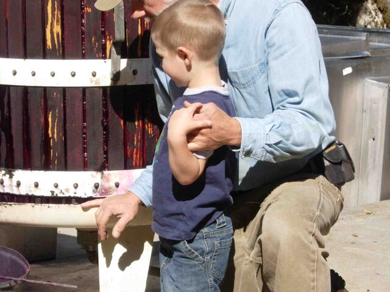
Inspecting the press. 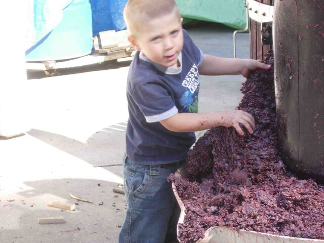
Hey, you just gonna stand there or are you gonna help? 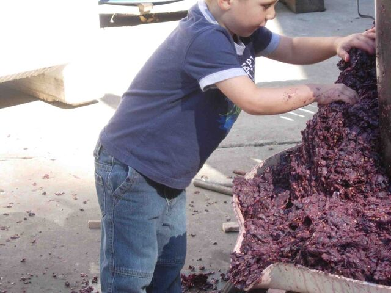
Winemaking can be a messy job, but somebody's got to do it! 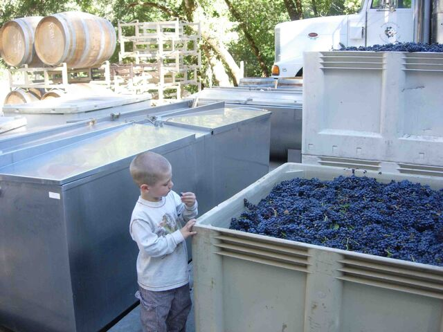
Cody tasting the 2008 grapes. 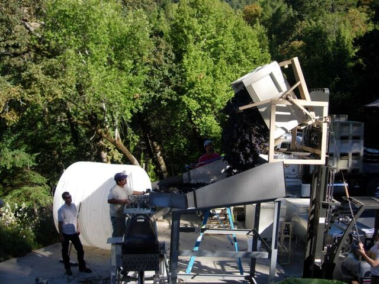
Alberto and Oscar feeding grapes into the crusher 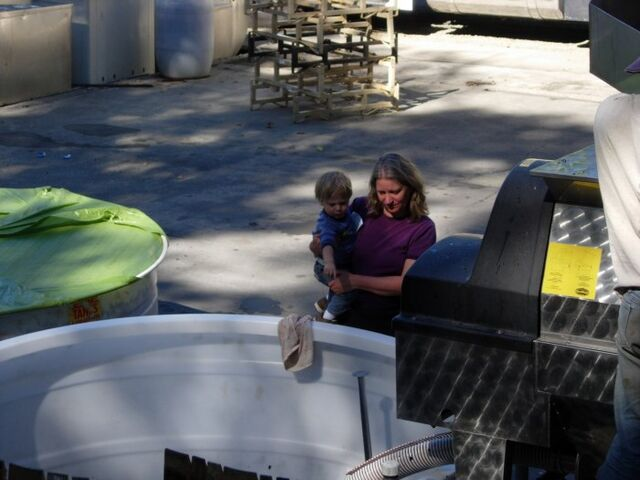
Cody telling Marion it looks like a good vintage 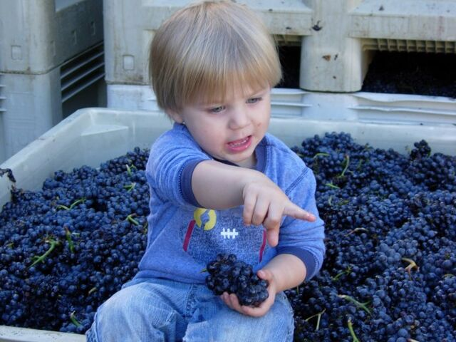
Cody discussing the quality of the fruit 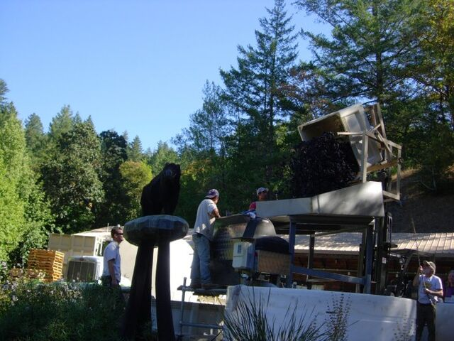
Daniel dumping the grapes into the crusher 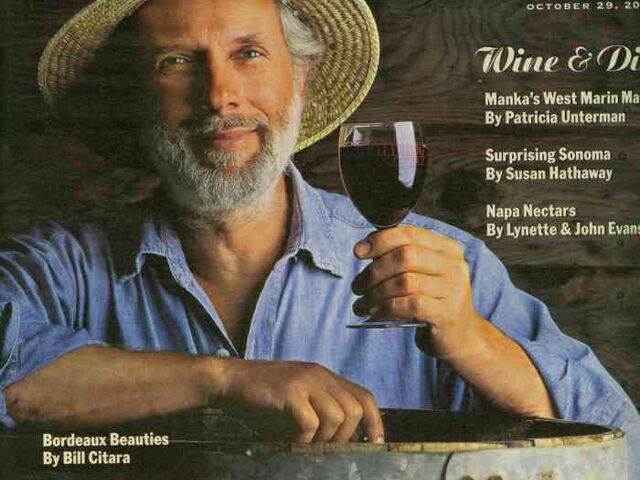
The winemaker enjoying a glass 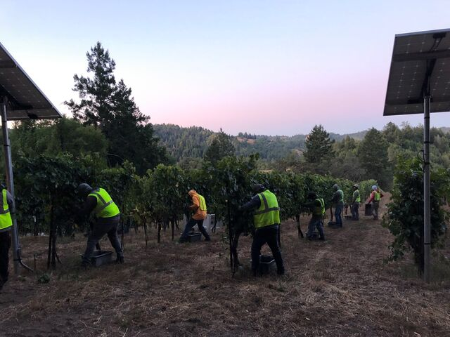
September, 2019 early morning 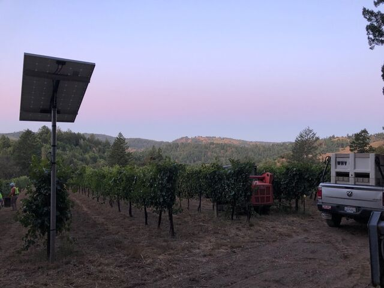
September, 2019 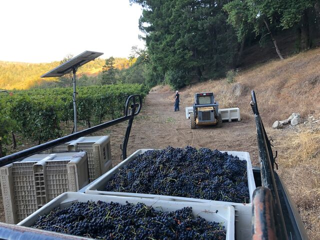
Nice load of grapes. 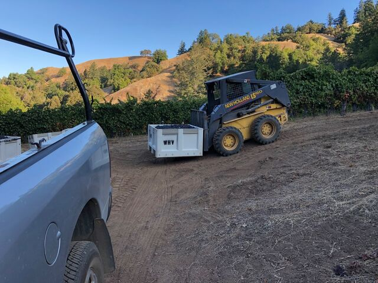
Harvest, September 2019 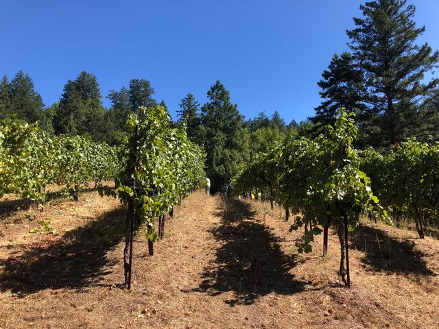
September, 2019 early morning 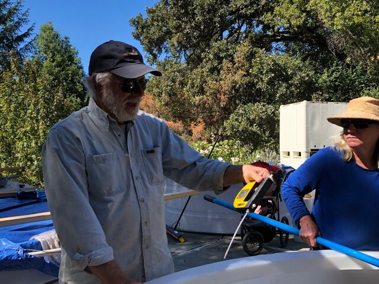
Daniel measuring the sugar content of the grapes. 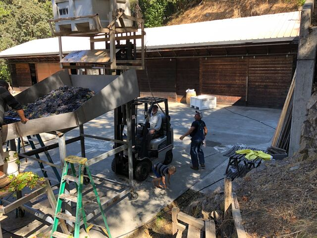
September, 2019 Crush production line 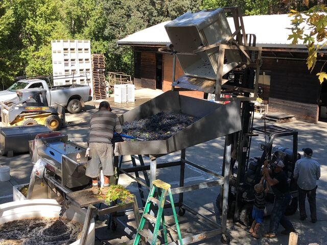
September, 2019 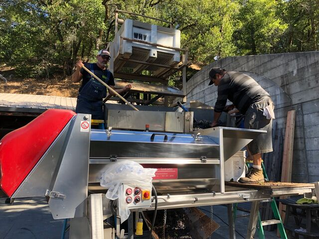
Harvest, September 2019 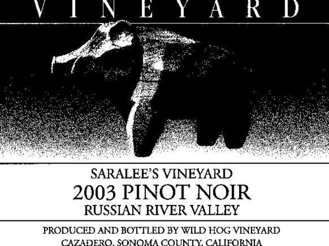
Wild Hog label 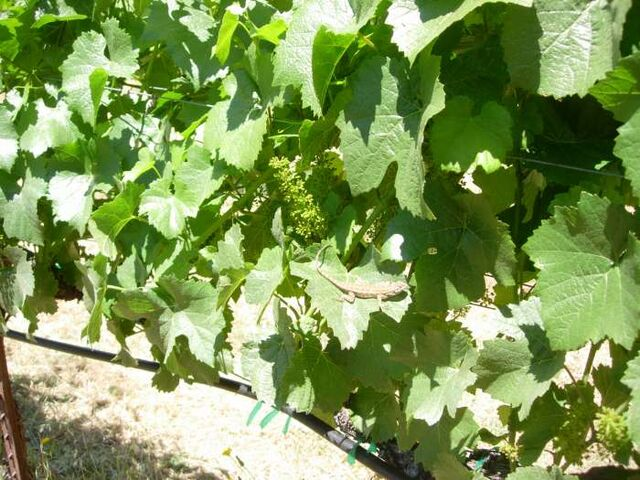
A special friend sitting on a grape leaf near a cluster of pinot noir in bloom. 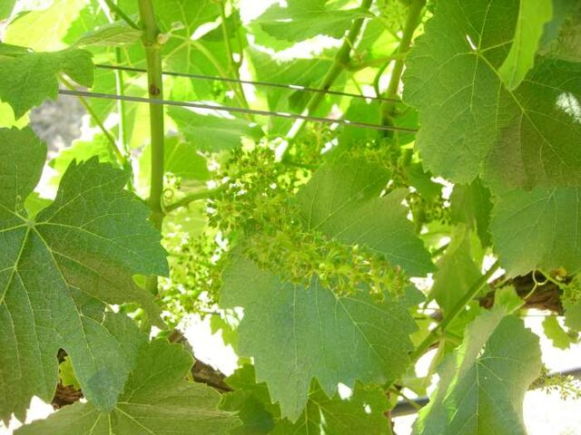
Our Pinot Noir grapes in bloom Spring 08. 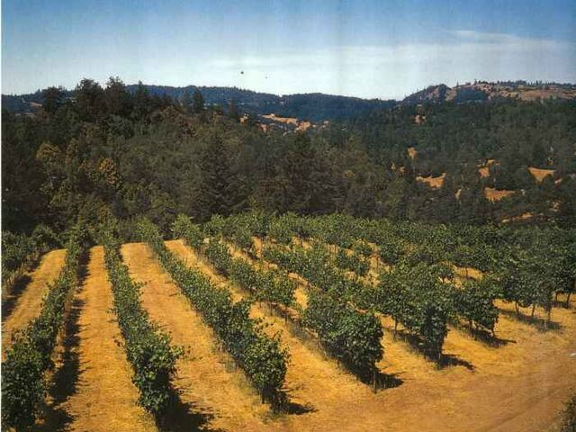
The Estate Vineyard in late summer 
View of the Estate Vineyard in late spring 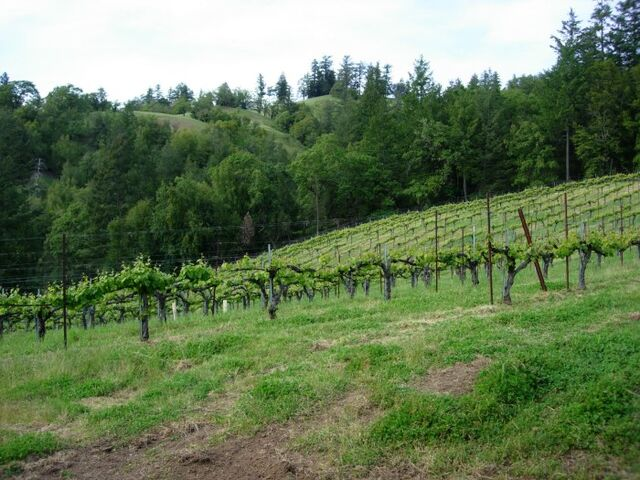
View of the Estate Vineyard in late spring 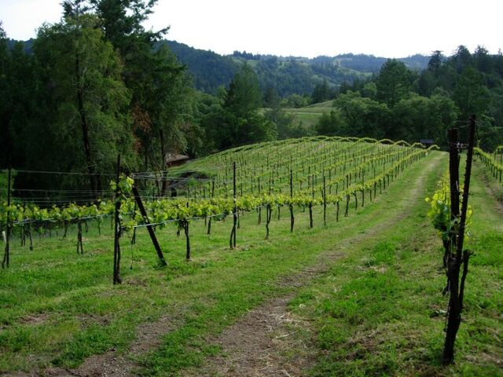
View of the Estate Vineyard in late spring 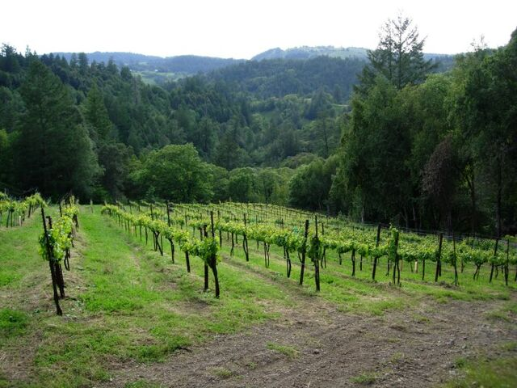
View of the Estate Vineyard in late spring